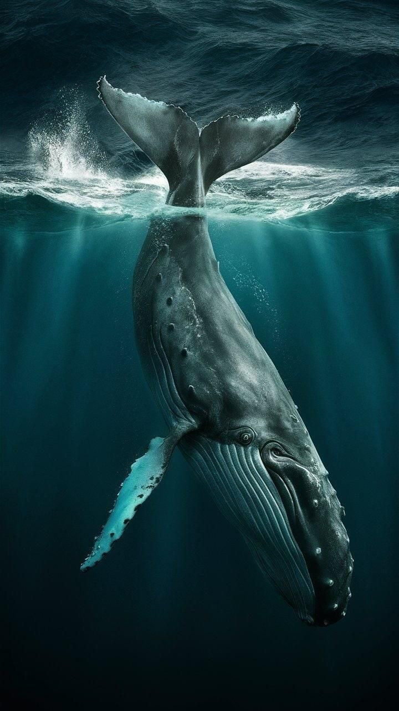
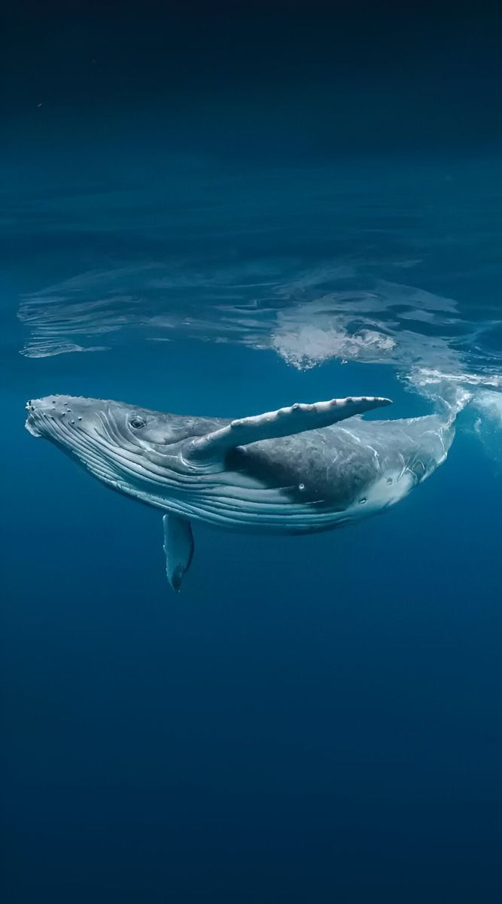
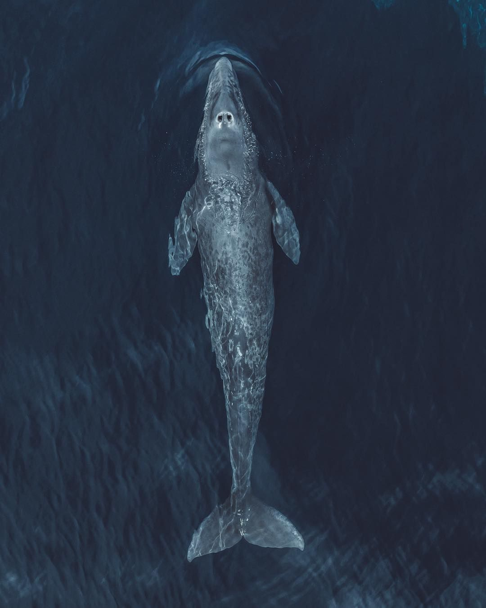
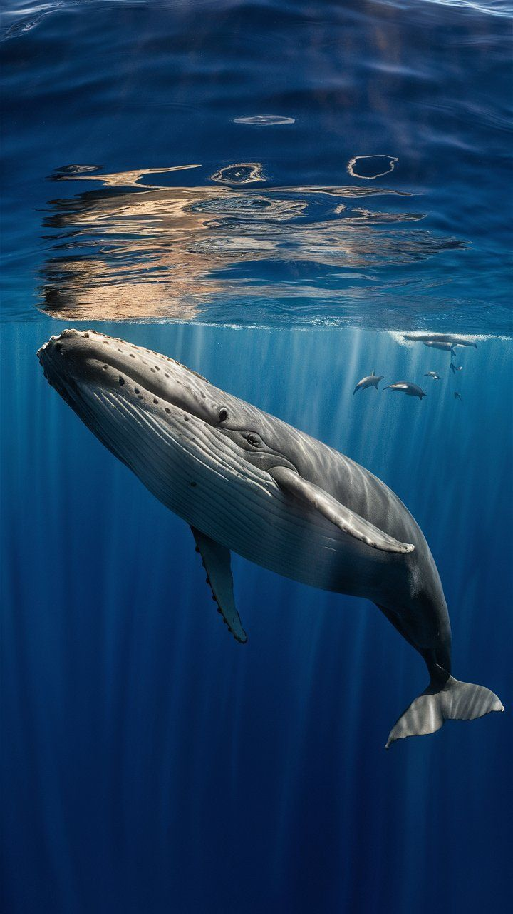
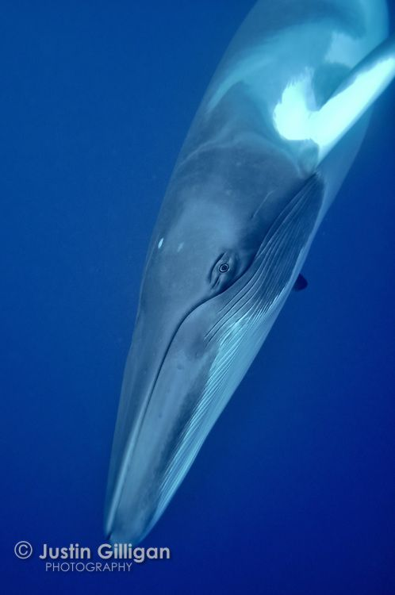
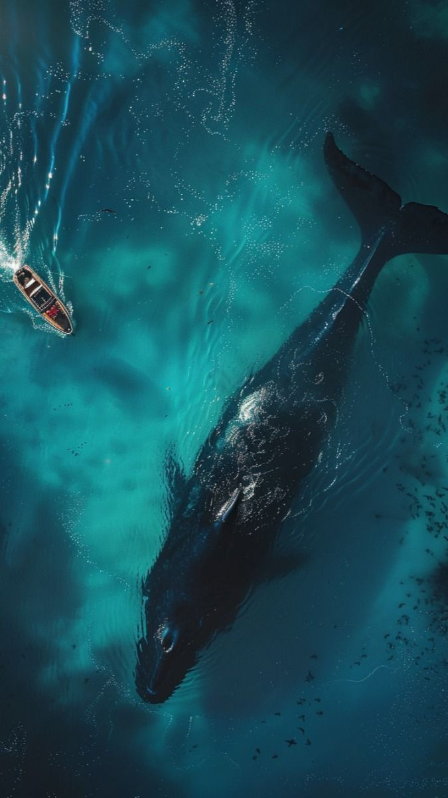
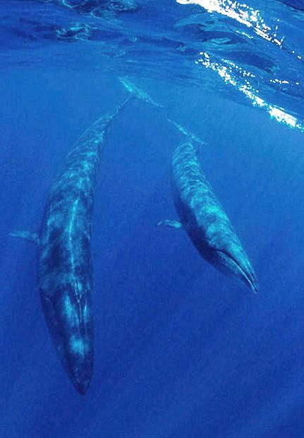

Blue Whale – The largest animal on Earth, reaching up to 100
feet and weighing 200 tons. They feed on krill.

Humpback Whale – Known for their long pectoral fins and
acrobatic breaching behavior, they sing complex songs.

Gray Whale – A migratory species with a rough, barnacle-covered
body, famous for long coastal migrations.

Fin Whale – The second-largest whale, sleek and fast, sometimes
called the "greyhound of the sea."

Minke Whale – The smallest baleen whale, known for being curious
and often approaching boats.

Bowhead Whale (Balaena mysticetus) – Found in Arctic waters,
they have the thickest blubber and longest lifespan (over 200
years).
Right Whales – Slow-moving whales with large heads covered in
callosities, once heavily hunted for their oil-rich bodies.

Sei Whale – A fast-swimming whale that prefers deep offshore
waters, feeding on small fish and plankton.